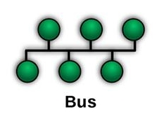
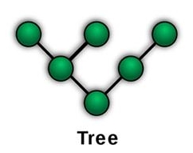
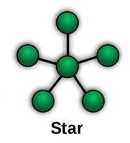
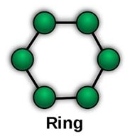
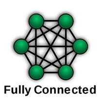

| Topologia |
Ventajas |
Desventajas |
| Bus  |
Es muy económica pues solo se necesita un cable (bus).
Los datos son compartidos por todas las terminales.
Es fácil agregar o eliminar dispositivos de la red, ya que estos están secuencialmente encadenados. |
Si el cable se daña en cualquier punto, ninguna estación podrá transmitir datos. |
| Ábol  |
Por su topología permite que la red se expanda.
Asegura que nada mas exista una ruta de datos.
Los ETD subordinados ejercen un control en los ETD inferiores. |
Presenta muchos cuellos de botella.
Si el ordenador principal falla toda la red se incapacita.
Permite la evolución gradual hacia una red más compleja. |
| Estrella |
Cubren grandes distancias al regenerarse la señal.
El mantenimiento. Es relativamente sencillo.
El aislamiento y la recuperación de fallas es sencillo. |
Vulnerable al cable.
Falla en los repetidores.
Tiempo de respuesta de acuerdo al número de nodos.
No es muy fácil de instalar. |
| Anillo |
Fácil de mantener.
Fácil de conectar los componentes.
Fácil de agregar nuevos repetidores. |
La información se transmite en un solo sentido.
Si alguna terminal falla, puede hacer que toda la red se caiga. |
| Maya |
Es atractiva por su inmunidad a los problemas de embotellamiento y averías. |
La lógica de control de este tipo de red puede llegar a ser muy complicada.
Su costo es muy elevado. |